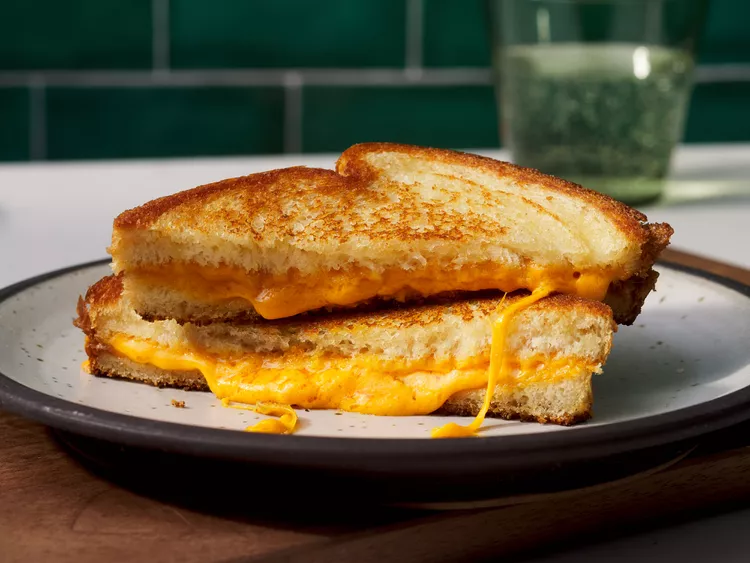

Gather All Ingredients
Preheat a nonstick skillet over medium heat. Generously butter one side of a slice of bread

Place bread butter-side down in the hot skillet; add 1 slice of cheese

Butter a second slice of bread on one side and place it butter-side up on top of cheese
Cook until lightly browned on one side; flip over and continue cooking until cheese is melted
Repeat with remaining 2 slices of bread, butter, and slice of cheese. Serve and enjoy!
